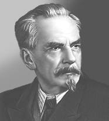

Шапошников Владимир Николаевич
С cайтов http://mega.km.ru и http://www.persons-info.com

Шапошников Владимир Николаевич (1884-1968), российский микробиолог, один из основоположников технической микробиологии в СССР, академик АН СССР (1953). Окончил Московский университет (1910), преподавал там же на кафедрах физиологии растений (1911-1926; с 1921 г. - профессор) и микробиологии (1926-1967, в 1938-1967 гг. - заведующий кафедрой). Руководил лабораторией технической микробиологии Научно-исследовательского химико-фармацевтического института (1920-1935), Центральной научно-исследовательской лабораторией бродильной промышленности (1935-1938), отделом технической микробиологии Института микробиологии АН СССР (1938-1963). Основные труды по технической микробиологии. Внёс крупный вклад в физиологию микроорганизмов, наметил пути эволюции основных типов брожения, открыл двухфазность многих микробиологических процессов, что позволило в ряде случаев управлять ими. Его работы стали научной основой для организации в СССР промышленного производства молочной кислоты, ацетона, уксуса и др. Создал большую научную школу. Государственная премия СССР (1950).